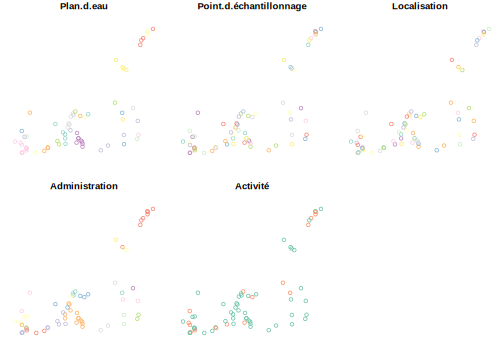

4.2 Import spatial data from .csv file
Spatial data are sometimes stored in a text file format (.txt or .csv), in such
case columns providing the coordinates must be included and the user must know
the CRS (Coordinate Reference System). A sf object allows us to store both
the coordinates of each point as well as associated attribute data, i.e.
columns describing each feature in the spatial object.
The dataset we work with below represents sampling points of a monitoring program of water quality in Montreal (available here).
# Download csv file from web page in your working directory
if (!file.exists("data/ruisso.csv")) {
download.file(
"https://data.montreal.ca/dataset/86843d31-4251-4002-b10d-620aaa751092/resource/adad6c48-fb48-40fc-a031-1ac870d978b4/download/stations_ruisso.csv",
destfile = "data/ruisso.csv"
)
}
# Read csv file in R
pts <- read.csv("data/ruisso.csv", header = TRUE, dec = ",")4.2.1 Convert a data frame to simple feature objects
The data frame containing sampling points can be converted into simple feature
objects using st_as_sf(). To do so, we need to specify where coordinates are,
i.e. columns LATITUDE and LONGITUDE as well as the CRS. In our example,
the CRS is specified in the metadata of the data set: the datum is WGS84 and the EPSG is 4326.
Remember that without the CRS, you cannot locate correctly your coordinates on the
Earth’s surface. In the package sf, the reference system can be define using
the proj4 format or directly with the EPSG code.
#R> Simple feature collection with 6 features and 5 fields
#R> Geometry type: POINT
#R> Dimension: XY
#R> Bounding box: xmin: -73.93704 ymin: 45.43462 xmax: -73.9012 ymax: 45.45022
#R> Geodetic CRS: WGS 84
#R> Plan.d.eau Point.d.échantillonnage
#R> 1 Rivière à l'Orme AAO-0.0
#R> 2 Rivière à l'Orme AAO-1.5P1
#R> 3 Rivière à l'Orme AAO-2.0P4
#R> 4 Rivière à l'Orme AAO-3.3P6
#R> 5 Rivière à l'Orme AAO-3.5
#R> 6 Rivière à l'Orme AAO-3.6
#R> Localisation
#R> 1 Pierrefonds, boul. Gouin O, 40m au nord de la rue de l'Anse à l'Orme, exutoire au lac des Deux Montagnes.
#R> 2 Pierrefonds, N ponceau boul.Gouin, 1500m en amont exutoire, branche provenant de l'est.
#R> 3 Ste-A.-de-Bellevue, branche drainant secteur ouest, 140m à l'est de la rue Leslie Dowker.
#R> 4 Kirkland, 60m au sud de l'intersection des rues de l'Anse à l'Orme et de Timberley trail, derrière le dépôt à neige.
#R> 5 Sainte-Anne-de-Bellevue, 10m au nord du ch. Ste-Marie, 200m à l'ouest du ch. Anse à l'Orme.
#R> 6 Beaconsfield, 250m à l'est de la rue Lee et 25m au sud de l'autoroute 40, en amont du pluvial.
#R> Administration Activité geometry
#R> 1 Pierrefonds-Roxboro Actif POINT (-73.93704 45.45022)
#R> 2 Pierrefonds-Roxboro Inactif POINT (-73.91931 45.44744)
#R> 3 Sainte-Anne-de-Bellevue Inactif POINT (-73.91535 45.44288)
#R> 4 Kirkland Actif POINT (-73.90147 45.43689)
#R> 5 Sainte-Anne-de-Bellevue Actif POINT (-73.90144 45.43566)
#R> 6 Baie d'Urfé Actif POINT (-73.9012 45.43462)As you can see, we now have a MULTIPOINT geometry, and the spatial information
is now stored in a simple feature list-column (sfc). The other columns contain
all the attributes related to the sample points.
The default plot of a simple features object is a multi-facet of all attributes.

As you can see, instead of creating a single map, as with sp object, the default plot of sf object creates multiple maps, one for each attribute, which can sometimes be useful for exploring the spatial distribution of different variables.
4.2.2 Export your points in a Shapefile
We can write a simple features object to a file (e.g. a shapefile) using the
st_write() function in sf, which needs at least two arguments, the object
and a filename:
#R> Warning in abbreviate(fld_names, minlength = 7): abbreviate used with non-ASCII
#R> chars#R> Warning in abbreviate_shapefile_names(obj): Field names abbreviated for ESRI
#R> Shapefile driver#R> Deleting source `data/pts_sf.shp' using driver `ESRI Shapefile'
#R> Writing layer `pts_sf' to data source `data/pts_sf.shp' using driver `ESRI Shapefile'
#R> Writing 66 features with 5 fields and geometry type Point.Note that st_write() selected one driver base on the file extension provided.
The driver can also be made explicit using the driver argument like so:
st_write(pts_sf, "import/pts_sf.shp", driver = "ESRI Shapefile"). Last but not
least, in order to have details about drivers available, have a look at the data
frame st_drivers() returns.